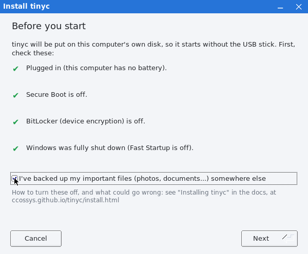
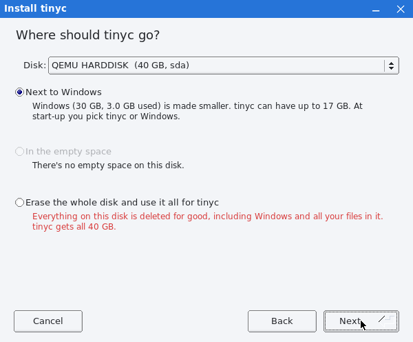
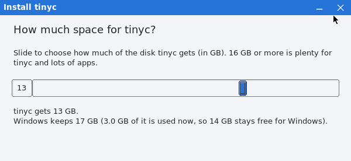
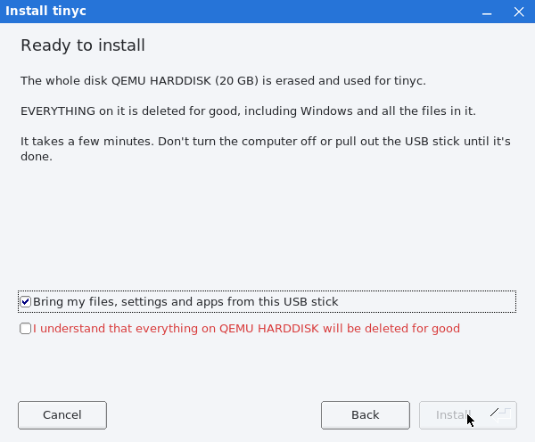
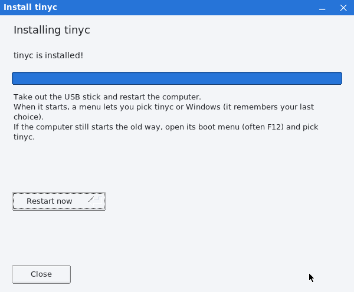

CcOS home > tinyCcOS > Install
Installing tinyc on your computer
[ About | Docs | Install | Download ]
tinyc can be put on your computer's own disk (a hard disk or SSD), so it starts without the USB stick.
You can keep Windows and pick tinyc or Windows each time the computer starts, or give tinyc the whole disk.
|
Please read this first. Installing changes your computer's disk. It's tested, but tinyc is a
beta, and if something goes wrong (a power cut in the middle, a disk that was already failing, a bug),
Windows or your files could be damaged. So back up everything important first, and read
what could go wrong. If you only want to try tinyc, you don't need to install it:
it runs from the USB stick just fine.
|
Contents
- The three ways to install
- Before you start (checklist)
- Turning off BitLocker (device encryption)
- Turning off Fast Startup
- Turning off Secure Boot
- Installing, step by step
- After installing
- What could go wrong
- Removing tinyc again
| Way | What happens | Windows |
|---|
| Next to Windows | Windows is made smaller (you choose how much space tinyc gets with a slider). tinyc goes in the freed space. When the computer starts, a menu lets you pick tinyc or Windows. | Stays, with all its files |
| In the empty space | If part of the disk isn't used by anything, tinyc goes there. Nothing else is changed. | Stays, untouched |
| Erase the whole disk | Everything on the disk is deleted and tinyc gets all of it. | Deleted for good, with all its files |
Windows always keeps at least 10 GB of free space for itself, and tinyc gets at least 4 GB. 16 GB or more is plenty for tinyc and lots of apps.
Go through all of these in Windows, before starting tinyc from the USB stick. The Install tinyc app checks most of them
too and tells you if one isn't done.
- Back up your important files (photos, documents, school work, game saves...) to another USB drive or to the cloud
(OneDrive, Google Drive...). This is the most important step.
- Laptops: plug in the charger and keep it plugged in until it's done.
- Turn off BitLocker / device encryption, and wait until it's fully off. How?
- Turn off Fast Startup, then shut down Windows (not restart). How?
- Make sure Windows has free space: tinyc can only take space Windows isn't using. Empty the Recycle Bin and
delete what you don't need first.
- Turn off Secure Boot in the computer's setup (BIOS). How?
(If tinyc already starts from the USB stick on this computer, it's already off.)
Many new laptops with Windows 11 encrypt the disk by themselves. tinyc can't make an encrypted Windows smaller,
so it has to be turned off first.
It's best to leave it off afterwards too: with BitLocker on, Windows may ask for the recovery key every time
you start it from tinyc's menu (BitLocker notices that Windows was started a different way).
First, save your recovery key, just in case: go to aka.ms/myrecoverykey,
sign in with your Microsoft account, and write the key down or take a photo of it. If Windows ever asks for it after
changes to the computer, that's the key it wants.
- Windows 11 Home: Settings > Privacy & security > Device encryption > turn it Off.
- Windows 10/11 Pro: Control Panel > System and Security > BitLocker Drive Encryption > Turn off BitLocker.
- Turning it off ("decrypting") takes a while, from minutes to hours. Wait until it says it's off.
If you don't see either setting, it's not on.
With Fast Startup on, "Shut down" doesn't really shut Windows down: it half-sleeps, and its disk stays half-open.
Changing a half-open disk is dangerous, so tinyc won't touch it.
- Open Control Panel > Hardware and Sound > Power Options.
- Click Choose what the power buttons do (on the left).
- Click Change settings that are currently unavailable.
- Untick Turn on fast startup (recommended) and click Save changes.
- Now Shut down Windows (from the Start menu). Don't use Restart.
Keep it off while you use tinyc next to Windows: tinyc can then open your Windows files safely too.
Secure Boot only lets the computer start systems signed by Microsoft. tinyc isn't, so Secure Boot has to be off,
for the USB stick and for the installed tinyc.
- Turn the computer on and press the setup key at the logo: often F2, Del, F10 or Esc
(it's often written on the screen for a moment).
- Find Secure Boot. It's usually under Security, Boot or Authentication.
- Set it to Disabled. Some computers want you to set a "supervisor password" first; you can remove it again afterwards.
- Save and exit (often F10).
Windows keeps working with Secure Boot off. If BitLocker is still on, Windows may ask for the recovery key once.
- Start tinyc from its USB stick (see Starting tinyc).
- Open /o\ > Install tinyc.
- Before you start: tinyc checks the computer. Fix anything with a red mark, tick I've backed up my important files, click Next.

- Where should tinyc go? Pick the disk (if there's more than one) and the way to install. Ways that can't be used say why.

- How much space for tinyc? Move the slider. It shows how much Windows keeps, and how much of that stays free for Windows.

- Ready to install: read the summary. Bring my files, settings and apps from this USB stick copies everything you
already did on the stick. For Erase the whole disk, you have to tick that you understand everything will be deleted.

- Click Install and wait. Making Windows smaller can take from seconds to a long time, depending on how full the disk is.
Don't turn the computer off.
- When it says tinyc is installed!, take out the USB stick and click Restart now.

- Windows gets damaged while it's being made smaller
- If the power goes out or the computer crashes in the middle, Windows may not start anymore, and files can be lost.
That's why you back up first and keep laptops plugged in. tinyc refuses to start if Windows isn't fully shut down,
is encrypted, or needs a disk check, which avoids the most common problems.
- Erase means erase
- Erase the whole disk deletes Windows and every file on that disk, for good. There is no undo.
- The computer starts Windows straight away, without the menu
- Some computers (and sometimes big Windows updates) put Windows first again. Open the computer's boot menu
(often F12, F9, F11 or Esc at the logo) and pick tinyc, or move tinyc to the top of the boot order in the setup (BIOS).
- Windows asks for a BitLocker recovery key
- This can happen after changing Secure Boot or the disk, and every time if BitLocker was turned back on. Type the key you saved from
aka.ms/myrecoverykey, then turn BitLocker off again (or start Windows from the computer's own boot menu).
- tinyc doesn't start: "Couldn't find tinyc's partition on this computer's disk"
- Something changed the disk (for example, tinyc's part was deleted). Start tinyc from the USB stick to get to your files, or install again.
- It's a beta
- The installer was tested on test computers (new UEFI with GPT disks, and old BIOS with MBR disks, 64-bit and 32-bit),
but not yet on many real ones. Computers with unusual disk setups (RAID, two Windows, Windows on a "logical" partition)
may not be offered the "Next to Windows" way.
Do these steps in this order, so Windows keeps starting:
- Newer computers (UEFI): in the computer's setup (BIOS), move Windows Boot Manager to the top of the boot order.
Old BIOS computers: start from a Windows installation USB, choose Repair your computer > Troubleshoot >
Command Prompt, and type bootrec /fixmbr.
- In Windows, open Disk Management (right-click the Start button). Delete the partition tinyc was on
(it has no drive letter and is the size you gave tinyc). Be careful to pick the right one.
- Right-click your C: partition and choose Extend Volume to give the space back to Windows.
tinyCcOS · written for tinyc 0.2 beta